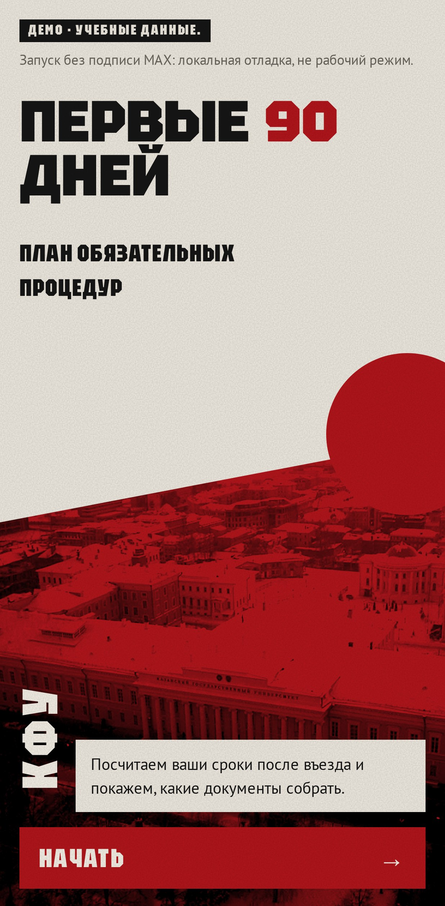

Показ, шаг 1 · пример: Казахстан, КФУ
Студент вводит дату въезда
Въезд17.10
До этого — язык, вуз и гражданство

Служебный слайд для технической проверки
Основной сценарий
Личный план иностранного первокурсника в MAX: свои сроки, документы и напоминания
«ИИ в массы»: Иван Резников, Иван Пушкин, Александр Чичерин, Михаил Анцев
Минобрнауки России × MAX, «Забота о людях». Казань, 29.10.2026

А памятки называют разное: ИТМО 30 дней на всё, СПбГЭУ 90, две страницы КФУ противоречат друг другу. Пропуск — повод сократить срок пребывания
115-ФЗ, ст. 5, в ред. 162-ФЗ с 01.09.2026; последствие — там же, п. 23. Памятки сверены 16–29.09.2026
До этого — язык, вуз и гражданство
Тот же план в чате и в мини-приложении. Сроки считает расчёт по правилам, не LLM

Документы с отметками, адрес и как добраться, чем грозит пропуск со ссылкой на закон

В чат MAX в 9:00 по Москве. Кнопка «Подробнее» открывает карточку
Пример: въезд 17.10, медосвидетельствование. Напоминания студент включает кнопкой в плане
Бот собирает текст с датами студента. Студент копирует и отправляет в международную службу сам

Кнопка «Ещё не в России»: «Госуслуги RuID», перевод паспорта и где его заверить; визовым странам — приглашение. Выбор вуза и подачу документов пока исследуем

По отзыву жюри
В продукте
Всё справа сделано после сдачи 30.09.2026. Блок для письма собирает команда, остальное работает в боте
Аналоги искали 22.09.2026 по открытым описаниям. Кабинеты и чаты вузов не изучали
Это сигнал, а не доказательство спроса. Неизвестное проверит пилот
более
422 тыс.
иностранных студентов в вузах России, Минобрнауки, 15.09.2026
Иностранцы на всех курсах, таблицы «Сведения» на сайтах вузов
■ профиль в боте □ профиля пока нет
Риски: закон меняется, поэтому у каждого правила дата сверки. Переводы на tt, uz и zh машинные. Вход в MAX с иностранным номером до въезда не проверен
ИТМО и СПбГЭУ подключены профилями, код не менялся. Профили собраны по открытым страницам. Вузы пока не партнёры: 19.10.2026 письма ушли в 31 вуз, ответов нет
Где
Одна группа первокурсников КФУ. Письмо в международную службу ушло 19.10, ответа пока нетКанал
Ссылка и QR в письме о зачислении или в чате куратораКто
Специалист вуза проверяет правила, куратор зовёт студентов, команда ведёт тестЭто цели пилота, результатов пока нет. КФУ не партнёр. Не ответит — проведём наблюдаемый тест по публичной памятке
Нужны специалист, который проверит правила, и одна группа первокурсников
max.ru/t149_hakaton_max_bot
Приложение
Приложение